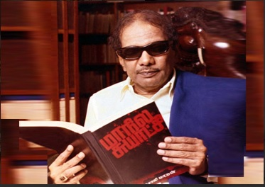

DR.KALAIGNAR KARUNANIDHI
💓A SMALL TRIBUTE PAGE ABOUT 💓TAMILINA THALAIVAR 💓 DMK LEADER💓DR.KALAIGNAR💓
"EXPERIENCE IS LIKE A SCHOOL.ARROGANT CAN NEVER LEARN."

KALAIGNAR reading Maanila Suyatchi Book
Winning History
Dr.Kalaignar Won in all Tamil Nadu Assembly general elections.
| Year |
Constituency |
Vote percentage |
Opposition Party |
| 1957 |
Kulithalai |
*** |
INC |
| 1962 |
Thanjavur |
*** |
INC |
| 1967 |
Saidapet |
*** |
INC |
| 1971 |
Saidapet |
*** |
Congress |
| 1977 |
Anna Nagar |
50.1 |
AIADMK |
| 1980 |
Anna Nagar |
49.0 |
AIADMK |
| 1989 |
Harbour Won |
59.8 |
Muslim League |
| 1991 |
Harbour Won |
48.7 |
AIADMK |
| 1996 |
Harbour Won |
77.1 |
INC |
| 2001 |
Harbour Won |
51.9 |
INC |
| 2006 |
Harbour Won |
51 |
Independent |
| 2011 |
Thiruvarur |
62.9 |
AIADMK |
| 2016 |
Thiruvarur |
61.73 |
AIADMK |
Here's life
- 3 June 1924 - in the village of Thirukkuvalai in Nagapattinam district, Madras Presidency, to Muthuvel and Anjugam.
- 7 August 2018 (aged 94)Chennai, Tamil Nadu
"Unholy alliance will end in disaster"
If you have time, you should read more about this incredible human
being on his
Wikipedia entry.
@heartist2021